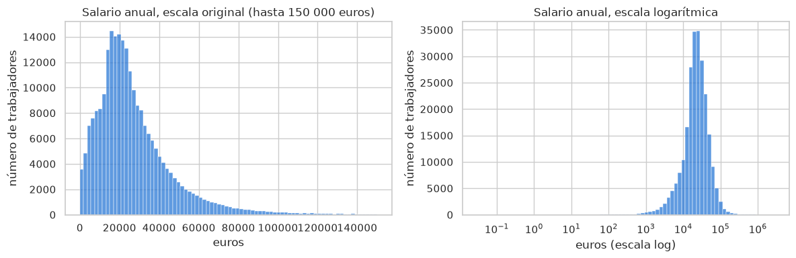
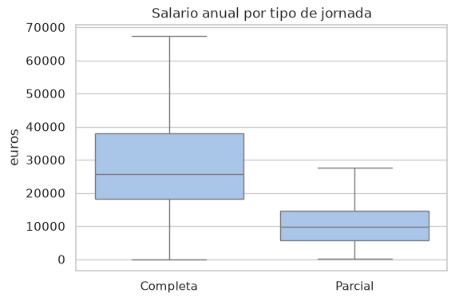
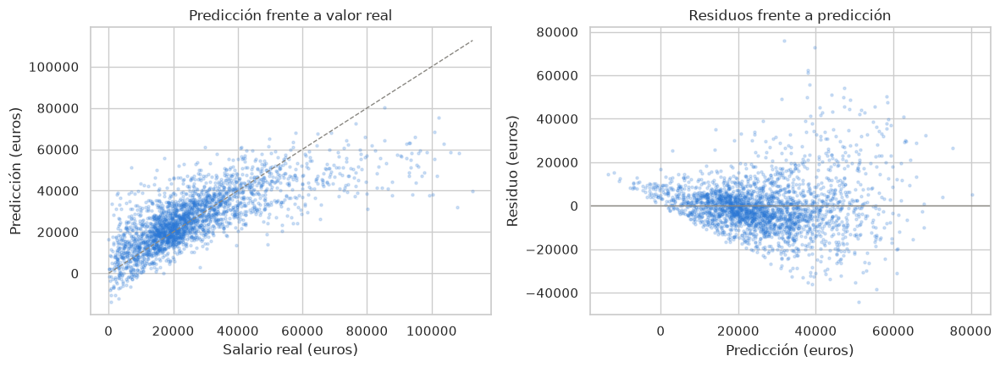

Datos: Encuesta Cuatrienal de Estructura Salarial 2022 (INE), microdatos anonimizados.
Qué vamos a hacer
Este cuaderno tiene dos propósitos a la vez. El primero es aprender a trabajar en Python con un conjunto de datos real: cargarlo, mirarlo, limpiarlo y dejarlo preparado para un modelo. El segundo es ajustar y evaluar el primer modelo del curso, la regresión lineal, que ya conocéis de R.
El cuaderno está pensado para quien viene de R y no ha usado Python. Cada vez que aparece una idea nueva de Python se explica antes de usarla, y cuando existe un equivalente directo en R se indica.
Objetivos
Al terminar deberías ser capaz de:
Cargar un fichero de datos en Python con pandas y describirlo (dimensión, tipos de variable, valores ausentes).
Explicar qué variables del fichero pueden usarse como predictores y cuáles no, y por qué.
Separar los datos en entrenamiento y prueba, y explicar por qué se hace antes de cualquier otro paso.
Entender qué hacen ColumnTransformer y Pipeline de scikit-learn y por qué se usan.
Ajustar una regresión lineal, obtener predicciones y evaluarlas con medidas de error.
Cómo trabajar con el cuaderno
Un cuaderno Jupyter se compone de celdas. Las celdas de texto (como esta) explican; las celdas de código se ejecutan con Mayús + Intro y muestran su resultado debajo. Ejecuta las celdas en orden, porque cada una usa objetos creados en las anteriores. Si algo falla, lo más frecuente es que falte ejecutar una celda anterior.
Hay ejercicios repartidos por el cuaderno, marcados como Ejercicio. Están pensados para hacerse en el momento, con lo visto hasta ese punto.
0. Preparación: librerías y datos
0.1 Librerías
En R se cargan paquetes con library(). En Python se hace con import. Hay tres formas habituales de escribirlo y conviene reconocerlas:
import pandas as pd: carga la librería y le da un alias corto. Después se usa con el prefijo: pd.read_csv(...).
from sklearn.linear_model import LinearRegression: carga solo un objeto concreto de la librería, y se usa sin prefijo.
import matplotlib.pyplot as plt: igual que el primero, pero de un submódulo.
Las librerías que usaremos en este cuaderno:
Librería
Para qué sirve
Análogo en R
pandas
Tablas de datos (DataFrame)
data.frame, dplyr
numpy
Vectores y cálculo numérico
vectores y matrices base de R
matplotlib, seaborn
Gráficos
ggplot2
scikit-learn (sklearn)
Modelos de predicción y preprocesamiento
lm(), caret, tidymodels
import warningswarnings.filterwarnings("ignore") # oculta avisos que no afectan a los resultadosimport numpy as npimport pandas as pdimport matplotlib.pyplot as pltimport seaborn as snsfrom sklearn.model_selection import train_test_splitfrom sklearn.compose import ColumnTransformerfrom sklearn.pipeline import Pipelinefrom sklearn.impute import SimpleImputerfrom sklearn.preprocessing import StandardScaler, OneHotEncoderfrom sklearn.linear_model import LinearRegressionfrom sklearn.metrics import r2_score, mean_absolute_error, root_mean_squared_errorsns.set_theme(style="whitegrid")SEMILLA =42# fija los procesos aleatorios para que todos obtengamos los mismos resultadosprint("Librerías cargadas")
Librerías cargadas
0.2 Cargar los datos
El fichero EES_2022.tab está publicado en la web del curso. pd.read_csv() es el equivalente de read.csv() o read_delim() en R, y acepta directamente una dirección web. El fichero del INE usa el tabulador como separador de columnas, por eso se indica sep="\t". El resultado es un DataFrame, la tabla de datos de pandas.
URL_DATOS ="https://juandmontoro.github.io/tap/data/EES_2022.tab"df = pd.read_csv(URL_DATOS, sep ='\t', low_memory=False)df.columns = [c.replace('"', "").strip() for c in df.columns] # algunos nombres vienen entre comillasprint("Filas y columnas:", df.shape)
Filas y columnas: (240490, 56)
1. Primer vistazo a los datos
Antes de modelizar hay que mirar los datos. En la tabla siguiente están las operaciones básicas de pandas y su equivalente en R.
Qué queremos
Python (pandas)
R
Dimensión
df.shape
dim(df)
Primeras filas
df.head()
head(df)
Tipos de cada columna
df.dtypes o df.info()
str(df)
Resumen numérico
df.describe()
summary(df)
Una columna
df["SEXO"]
df$SEXO
Varias columnas
df[["SEXO", "ESTU"]]
df[, c("SEXO", "ESTU")]
Filtrar filas
df[df["SEXO"] == 1]
df[df$SEXO == 1, ]
Tabla de frecuencias
df["SEXO"].value_counts()
table(df$SEXO)
Una diferencia que conviene tener presente: en Python los índices empiezan en 0, no en 1.
df.head()
IDENCCC
ORDENTRA
NUTS1
CNACE
ESTRATO2
CONTROL
MERCADO
REGULACION
SEXO
TIPOPAIS
...
DSIESPA3
SIESPA4
DSIESPA4
RETRINOIN
RETRIIN
GEXTRA
VESPNOIN
VESPIN
ANOS2
FACTOTAL
0
6
1
1
Q0
1
2
1
1
6
1
...
0
6
0
6615.01
1133.82
1644.48
0.0
0.0
4
17.55
1
6
2
1
Q0
1
2
1
1
6
1
...
0
6
0
30757.32
0.00
3965.28
0.0
0.0
5
17.55
2
6
3
1
Q0
1
2
1
1
1
1
...
0
6
0
7739.92
188.47
894.48
0.0
0.0
3
17.55
3
6
4
1
Q0
1
2
1
1
6
1
...
0
6
0
12407.11
191.71
0.00
0.0
0.0
3
17.55
4
6
5
1
Q0
1
2
1
1
6
1
...
0
6
0
19717.33
124.81
2633.76
0.0
0.0
3
17.55
5 rows × 56 columns
Lectura. Todas las columnas están completas (no hay valores ausentes) y pandas las ha leído como enteros o decimales. Esto no significa que todas sean numéricas en sentido estadístico: muchas son códigos de categorías (sexo, ocupación, comunidad autónoma) almacenados como números. Más adelante las trataremos como categóricas.
2. Las variables del fichero
Descripción de las 56 variables, tomada del diccionario oficial de la encuesta (dr_EES_2022.xlsx, distribuido junto con los microdatos).
Las variables monetarias están en euros con dos decimales; las mensuales se refieren al mes de octubre de 2022 y las anuales a todo el año 2022. “IT” significa incapacidad temporal (baja médica).
Variable
Descripción
Tipo
IDENCCC
Código del centro de cotización (empresa)
identificador
ORDENTRA
Número de orden del trabajador dentro del centro
identificador
NUTS1
Gran región geográfica (7 zonas)
categórica
CNACE
Actividad económica de la empresa (27 grupos de la CNAE)
categórica
ESTRATO2
Tamaño de la empresa por número de trabajadores
categórica
CONTROL
Propiedad pública o privada
categórica
MERCADO
Ámbito del mercado al que sirve la empresa
categórica
REGULACION
Forma de regulación de las relaciones laborales (tipo de convenio)
categórica
SEXO
Sexo del trabajador
categórica
TIPOPAIS
Nacionalidad: España o resto del mundo
categórica
CNO1
Grupo principal de ocupación (CNO-11, 17 grupos)
categórica
RESPONSA
Tiene responsabilidad de organización o supervisión
categórica
ESTU
Nivel de estudios (7 niveles)
categórica
ANOANTI
Años de antigüedad en la empresa
numérica
MESANTI
Meses de antigüedad, parte fraccionaria de la anterior
numérica
TIPOJOR
Tipo de jornada: completa o parcial
categórica
TIPOCON
Duración del contrato: indefinido o temporal
categórica
FIJODISM
Meses del periodo de trabajo del fijo discontinuo
numérica
FIJODISD
Días del periodo de trabajo del fijo discontinuo
numérica
VAL
Días de vacaciones anuales laborables
numérica
VAN
Días de vacaciones anuales naturales
numérica
PUENTES
Días de fiesta no oficiales
numérica
JAP
Jornada anual pactada (horas)
numérica
JSP1
Jornada semanal pactada, horas
numérica
JSP2
Jornada semanal pactada, minutos
numérica
HEXTRA
Horas extraordinarias
numérica
DRELABM
Días de relación laboral en octubre
numérica
SIESPM1
Situación especial 1 en octubre (sí o no)
categórica
DSIESPM1
Días en situación especial 1 en octubre
numérica
SIESPM2
Situación especial 2 en octubre (sí o no)
categórica
DSIESPM2
Días en situación especial 2 en octubre
numérica
SALBASE
Salario base de octubre
numérica
EXTRAORM
Paga extraordinaria cobrada en octubre
numérica
PHEXTRA
Pagos por horas extraordinarias en octubre
numérica
COMSAL
Complementos salariales de todo tipo en octubre
numérica
COMSALTT
Complementos por nocturnidad, turnos o fin de semana en octubre
numérica
IRPFMES
Retenciones de IRPF en octubre
numérica
COTIZA
Cotizaciones a la Seguridad Social en octubre
numérica
BASE
Base de cotización por contingencias comunes en octubre
numérica
DRELABAM
Duración de la relación laboral en el año, meses
numérica
DRELABAD
Duración de la relación laboral en el año, días
numérica
SIESPA1
Situación especial 1 en el año (sí o no): baja por incapacidad temporal
categórica
DSIESPA1
Días en situación especial 1 en el año
numérica
SIESPA2
Situación especial 2 en el año (sí o no): permiso de maternidad o paternidad, riesgo durante el embarazo, lactancia, permiso sin sueldo, ERE o ERTE
categórica
DSIESPA2
Días en situación especial 2 en el año
numérica
SIESPA3
Situación especial 3 en el año (sí o no): Reducciñon de jornada por guarda legal o cuidado de un familiar
categórica
DSIESPA3
Días en situación especial 3 en el año
numérica
SIESPA4
Situación especial 4 en el año (sí o no): huelga o suspensión de la relación por causas distintas a las anteriores
categórica
DSIESPA4
Días en situación especial 4 en el año
numérica
RETRINOIN
Salario bruto anual no derivado de IT
numérica (respuesta)
RETRIIN
Salario bruto anual derivado de IT
numérica
GEXTRA
Gratificaciones extraordinarias abonadas en el año
numérica
VESPNOIN
Valoración de las percepciones en especie anuales no derivadas de IT
numérica
VESPIN
Valoración de las percepciones en especie anuales derivadas de IT
numérica
ANOS2
Tramo de edad (6 tramos)
categórica
FACTOTAL
Factor de elevación de la encuesta
peso muestral
Dos observaciones sobre esta tabla. Primera, el diccionario no indica la unidad de JAP; se interpreta como horas anuales porque su rango (de 6 a 2 099) y la variable hermana JSP1 (horas semanales) así lo sugieren. Segunda, las variables categóricas están guardadas como números o letras, y pandas las lee como enteros o texto; el significado de cada código está en la tabla siguiente.
Códigos de las variables categóricas que usaremos como predictores
Variable
Códigos
SEXO
1 hombre, 6 mujer
TIPOJOR
1 tiempo completo, 2 tiempo parcial
TIPOCON
1 duración indefinida, 2 duración determinada
ESTU
1 menos que primaria, 2 primaria, 3 primera etapa de secundaria, 4 segunda etapa de secundaria, 5 formación profesional de grado superior y similares, 6 diplomados universitarios y similares, 7 licenciados, graduados y doctores
CONTROL
1 público, 2 privado
MERCADO
1 local o regional, 2 nacional, 3 Unión Europea, 4 mundial
REGULACION
1 convenio estatal sectorial, 2 sectorial de ámbito inferior, 3 de empresa o grupo, 4 de centro de trabajo, 5 otra forma
RESPONSA
1 sí, 0 no
NUTS1
1 Noroeste, 2 Noreste, 3 Comunidad de Madrid, 4 Centro, 5 Este, 6 Sur, 7 Canarias
TIPOPAIS
1 España, 2 resto del mundo
ESTRATO2
1 de 1 a 49 trabajadores, 2 de 50 a 199, 3 de 200 o más, 0 y 4 agregados de varios estratos
ANOS2
1 menos de 20 años, 2 de 20 a 29, 3 de 30 a 39, 4 de 40 a 49, 5 de 50 a 59, 6 más de 59
CNO1
A0 directores y gerentes; B0 técnicos y profesionales científicos de la salud y la enseñanza; C0 otros técnicos y profesionales científicos; D0 técnicos y profesionales de apoyo; E0 empleados de oficina sin atención al público; F0 empleados de oficina con atención al público; G0 trabajadores de restauración y comercio; H0 trabajadores de salud y cuidado de personas; I0 protección y seguridad; J0 cualificados del sector agrario y pesquero; K0 cualificados de la construcción; L0 cualificados de industrias manufactureras; M0 operadores de instalaciones y maquinaria fijas; N0 conductores y operadores de maquinaria móvil; O0 no cualificados en servicios; P0 peones; Q0 ocupaciones militares
CNACE
B0 industrias extractivas; C1 a C8 industria manufacturera por ramas (alimentación y textil, madera y papel, artes gráficas, química y farmacia, minerales no metálicos, metalurgia, informática y maquinaria, vehículos y otras); D0 energía; E0 agua y residuos; F0 construcción; G1 comercio al por mayor y vehículos; G2 comercio al por menor; H1 transporte; H2 almacenamiento y correos; I0 hostelería; J0 información y comunicaciones; K0 finanzas y seguros; L0 inmobiliarias; M0 actividades profesionales y científicas; N0 actividades administrativas y auxiliares; O0 administración pública; P0 educación; Q0 sanidad y servicios sociales; R0 actividades artísticas y recreativas; S0 otros servicios
Las etiquetas completas están en el diccionario dr_EES_2022.xlsx, hojas Tablas1 y Tablas2.
2.1 La variable respuesta
La variable que queremos predecir es RETRINOIN: salario bruto anual, en euros, descontando lo cobrado durante bajas por incapacidad temporal. Es una variable continua y positiva.
df["RETRINOIN"].describe()
count 2.404900e+05
mean 2.827257e+04
std 3.056747e+04
min 0.000000e+00
25% 1.474994e+04
50% 2.276410e+04
75% 3.490426e+04
max 2.794880e+06
Name: RETRINOIN, dtype: float64
df.groupby('ESTU')['RETRINOIN'].describe()
count
mean
std
min
25%
50%
75%
max
ESTU
1
1227.0
16347.487498
9746.335983
0.0
9398.6600
15497.710
21340.3200
100503.44
2
33539.0
18131.061920
11089.934270
0.0
10521.5750
17245.920
23453.2250
252724.90
3
56296.0
19586.979169
14433.391516
0.0
11916.5400
18210.020
24853.0950
966824.95
4
48903.0
23834.088031
24674.217172
0.0
14151.2650
21028.950
29896.3150
2788733.09
5
24674.0
27836.996243
18350.637755
0.0
16943.9175
24865.665
35064.7300
774415.00
6
35831.0
34630.349464
27274.713130
0.0
19806.2650
30431.000
42516.9450
981820.00
7
40020.0
49355.228938
53821.787134
0.0
27066.2675
41021.365
59991.9425
2794880.46
fig, ejes = plt.subplots(1, 2, figsize=(12, 4))# A la izquierda limitamos el eje a 150 000 euros: el máximo (2,8 millones) aplastaría el gráficosns.histplot(df.loc[df["RETRINOIN"] <150_000, "RETRINOIN"], bins=80, ax=ejes[0], color="#2a78d6")ejes[0].set_title("Salario anual, escala original (hasta 150 000 euros)")ejes[0].set_xlabel("euros")ejes[0].set_ylabel("número de trabajadores")sns.histplot(df.loc[df["RETRINOIN"] >0, "RETRINOIN"], bins=80, ax=ejes[1], color="#2a78d6", log_scale=True)ejes[1].set_title("Salario anual, escala logarítmica")ejes[1].set_xlabel("euros (escala log)")ejes[1].set_ylabel("número de trabajadores")plt.tight_layout()plt.show()

Lectura. La distribución es asimétrica: la mayoría de los salarios se concentran en la parte baja y hay una cola larga hacia la derecha. La media es mayor que la mediana. En escala logarítmica la forma se acerca a una campana. Guardamos este dato: la asimetría va a afectar a la regresión lineal, y en el tema siguiente será la razón para introducir otros modelos.
2.2 Limpieza
Tomamos dos decisiones y las dejamos escritas, porque afectan a los resultados:
Eliminamos los salarios iguales a cero. Corresponden a registros sin actividad retribuida en el año y no aportan información sobre lo que queremos explicar.
Recortamos el 1 por ciento de salarios más altos. Son casos extremos que dominan el error cuadrático y dificultan el aprendizaje. Es una decisión discutible, pero es transparente y reproducible.
Además, para que las celdas se ejecuten con rapidez, trabajaremos con una muestra aleatoria de 10 000 trabajadores. El fichero completo tiene 240 490, y puede usarse entero si se dispone de tiempo.
tope = df["RETRINOIN"].quantile(0.99)limpio = df[(df["RETRINOIN"] >0) & (df["RETRINOIN"] <= tope)]print(f"Tope (percentil 99): {tope:,.0f} euros")print(f"Filas tras la limpieza: {len(limpio):,} (descartadas {len(df) -len(limpio):,})")# sample() extrae filas al azar; random_state fija la semilla, como set.seed() en Rdatos = limpio.sample(n=10000, random_state=SEMILLA).reset_index(drop=True)print("Muestra de trabajo:", datos.shape)
Tope (percentil 99): 113,801 euros
Filas tras la limpieza: 237,353 (descartadas 3,137)
Muestra de trabajo: (10000, 56)
2.3 Salario por sexo
Un primer cruce descriptivo. En la encuesta, SEXO toma el valor 1 para hombres y 6 para mujeres. Con map() sustituimos los códigos por etiquetas legibles (en R se haría con factor(..., labels = ...)), y con groupby() calculamos resúmenes por grupo (como group_by() + summarise() de dplyr).
Ejercicio 1. Salario por tipo de jornada y por nivel de estudios
La variable TIPOJOR codifica el tipo de jornada: 1 es jornada completa y 2 jornada parcial. Crea una columna JORNADA_etq con esas etiquetas.
Calcula el salario medio y mediano por jornada.
Dibuja un diagrama de caja del salario por jornada.
Repite el diagrama de caja para ESTU, el nivel de estudios (a mayor código, mayor nivel).
Escribe en un comentario qué relación observas entre estudios y salario.
Solución. Seguimos paso a paso el mismo esquema que en la sección 2.3 con SEXO: primero etiquetas con map(), después resúmenes con groupby() y por último el diagrama de caja.
# 1. Etiquetas legibles para el tipo de jornada, igual que hicimos con SEXO.# map() recibe un diccionario {código: etiqueta} y sustituye cada código por su etiqueta.datos["JORNADA_etq"] = datos["TIPOJOR"].map({1: "Completa", 2: "Parcial"})# Comprobamos que no ha quedado ningún código sin etiquetaprint(datos["JORNADA_etq"].value_counts())
# 2. Salario medio y mediano por jornada.# groupby() agrupa las filas por jornada; agg() calcula varios resúmenes de una vez.resumen_jornada = datos.groupby("JORNADA_etq")["RETRINOIN"].agg(["count", "mean", "median"]).round(0)resumen_jornada
count
mean
median
JORNADA_etq
Completa
8212
30252.0
25648.0
Parcial
1788
11202.0
9881.0
# 3. Diagrama de caja del salario por jornada.# showfliers=False oculta los puntos extremos para que la caja se lea mejor.fig, eje = plt.subplots(figsize=(6, 4))sns.boxplot(data=datos, x="JORNADA_etq", y="RETRINOIN", ax=eje, showfliers=False, color="#9ec5f4")eje.set_title("Salario anual por tipo de jornada")eje.set_xlabel("")eje.set_ylabel("euros")plt.show()

# 4. Diagrama de caja por nivel de estudios.# No hace falta crear etiquetas: los códigos 1 a 7 ya están ordenados de menor a mayor nivel,# y seaborn los coloca en el eje en ese orden.fig, eje = plt.subplots(figsize=(8, 4))sns.boxplot(data=datos, x="ESTU", y="RETRINOIN", ax=eje, showfliers=False, color="#9ec5f4")eje.set_title("Salario anual por nivel de estudios")eje.set_xlabel("nivel de estudios (1 = menos que primaria ... 7 = licenciados, graduados y doctores)")eje.set_ylabel("euros")plt.show()# Para apoyar la lectura con números, la mediana por niveldatos.groupby("ESTU")["RETRINOIN"].median().round(0)
# 5. Lectura## Jornada: la jornada parcial tiene un salario anual muy inferior al de la completa (menos de la# mitad en mediana). Parte de la diferencia es mecánica: se trabajan menos horas al año. Por eso# incluimos JAP (horas pactadas) entre los predictores, que recogerá buena parte de ese efecto.## Estudios: la mediana del salario sube con el nivel de estudios, y el salto más grande está en los# dos niveles universitarios (6 y 7). Además la caja se ensancha al subir el nivel: a más estudios,# más salario, pero también más dispersión entre trabajadores del mismo nivel.
3. Qué variables pueden ser predictores
El fichero tiene 56 variables, pero no todas sirven para predecir el salario. Distinguimos tres grupos.
Grupo
Qué es
Se usa como predictor
Respuesta
RETRINOIN
No, es lo que predecimos
Componentes del salario
Variables que forman parte del propio salario anual o se calculan a partir de él
SALBASE (salario base mensual), COMSAL (complementos), EXTRAORM (pagas extraordinarias), GEXTRA, BASE, COTIZA y otras son piezas que suman para formar el salario anual. Predecir RETRINOIN con ellas es como predecir el total de un ticket de compra conociendo el precio de cada producto: el ajuste sería casi perfecto, y no serviría de nada. En una situación real, por ejemplo al estimar el salario de un puesto antes de fijarlo, no dispondríamos de esos componentes.
A este problema se le llama fuga de información (data leakage): el modelo aprende de información que en la práctica no estaría disponible en el momento de predecir. Es uno de los errores más frecuentes en predicción y conviene detectarlo antes de ajustar nada.
También dejamos fuera:
Los identificadores IDENCCC y ORDENTRA: no contienen información que se pueda generalizar.
El factor de elevación FACTOTAL: es un peso del diseño de la encuesta, no una característica del trabajador.
Predictores que sí usamos
Dos numéricas: ANOANTI (antigüedad en años) y JAP (horas de jornada pactada). El resto son categóricas, aunque estén codificadas con números.
Comparemos la correlación con el salario de dos predictores legítimos y de tres componentes salariales.
for v in ["ANOANTI", "JAP", "SALBASE", "COMSAL", "GEXTRA"]: r = datos[v].corr(datos["RETRINOIN"]) grupo ="componente del salario"if v in FUGA_SALARIAL else"predictor legítimo"print(f"corr(RETRINOIN, {v:8s}) = {r:5.2f}{grupo}")
Los componentes salariales tienen correlaciones mucho más altas. Un modelo que los usara parecería excelente y sería inútil.
3.2 Construir la matriz de predictores y la respuesta
En R, lm() recibe una fórmula y un data.frame, y se encarga por dentro de convertir los factores en variables indicadoras. En scikit-learn no hay fórmulas: el modelo recibe por un lado una tabla X con los predictores y por otro un vector y con la respuesta, y la conversión de categóricas la hacemos nosotros en el preprocesamiento (sección 5).
Convertimos ahora las columnas categóricas al tipo category de pandas, que es el análogo de factor en R.
X = datos[PREDICTORES].copy()y = datos[RESPUESTA]for col in PRED_CATEGORICOS: X[col] = X[col].astype("category")# Comprobación: ningún componente salarial se ha colado entre los predictoresassertnotset(FUGA_SALARIAL) &set(X.columns)print("X:", X.shape, " y:", y.shape)X.dtypes
Para saber si un modelo predice bien necesitamos evaluarlo con datos que no haya visto. Por eso, antes de hacer nada más, separamos:
un conjunto de entrenamiento (75 por ciento), con el que se ajusta el modelo, y
un conjunto de prueba (25 por ciento), reservado para medir el error al final.
El orden importa. Cualquier cálculo que use los datos (medias para escalar, categorías presentes, imputaciones) debe hacerse solo con el conjunto de entrenamiento. Si se hiciera con todos los datos, información del conjunto de prueba se filtraría al modelo y la evaluación sería optimista. Es otra forma de fuga de información, más sutil que la de la sección 3.
train_test_split() devuelve cuatro objetos, en este orden: predictores de entrenamiento, predictores de prueba, respuesta de entrenamiento, respuesta de prueba.
5. Preprocesamiento: dejar los datos como los necesita el modelo
Un modelo de scikit-learn solo acepta números. Antes de ajustar la regresión hay que:
convertir cada variable categórica en un conjunto de columnas indicadoras (0/1), una por categoría, lo que en R hace model.matrix() automáticamente y aquí se llama one-hot encoding;
escalar las variables numéricas, es decir, restar la media y dividir por la desviación típica (scale() en R), para que todas estén en unidades comparables; en la regresión lineal esto no cambia las predicciones, pero es una buena costumbre porque otros modelos sí lo necesitan;
decidir qué hacer con valores ausentes, si los hubiera, en nuestro caso imputar la mediana o la categoría más frecuente.
Podríamos hacer estas tres cosas a mano sobre X_train y repetirlas sobre X_test. Es propenso a errores: hay que recordar usar las medias del entrenamiento, no las de prueba, y aplicar exactamente las mismas categorías. scikit-learn resuelve esto con dos herramientas que conviene entender bien porque aparecerán en todo el curso.
5.1 La idea central: fit y transform
Todo objeto de preprocesamiento de scikit-learn tiene dos métodos:
fit(X_train): aprende lo que necesita de los datos de entrenamiento. Un escalador aprende la media y la desviación típica de cada columna; un codificador one-hot aprende qué categorías existen.
transform(X): aplica lo aprendido a cualquier tabla, sea de entrenamiento o de prueba.
Los modelos siguen el mismo esquema: fit(X_train, y_train) ajusta y predict(X) predice. Esta uniformidad es la razón por la que en Python se puede cambiar de modelo modificando una línea.
Veámoslo con un escalador sobre las dos variables numéricas.
escalador = StandardScaler()escalador.fit(X_train[PRED_NUMERICOS]) # aprende medias y desviaciones en entrenamientoprint("Medias aprendidas: ", escalador.mean_.round(2))print("Desviaciones aprendidas:", escalador.scale_.round(2))# Aplica esas mismas medias y desviaciones al conjunto de pruebaX_test_num_escalado = escalador.transform(X_test[PRED_NUMERICOS])print("\nPrimeras filas de prueba, escaladas:")print(X_test_num_escalado[:3].round(2))
Y ahora un codificador one-hot sobre una categórica. Fíjate en que cada categoría se convierte en una columna.
codificador = OneHotEncoder(sparse_output=False)codificador.fit(X_train[["TIPOJOR"]])print("Categorías vistas en entrenamiento:", codificador.categories_[0])print("Nombres de las columnas creadas: ", codificador.get_feature_names_out())print("\nPrimeras filas de prueba, codificadas:")print(codificador.transform(X_test[["TIPOJOR"]])[:5])
Categorías vistas en entrenamiento: [1 2]
Nombres de las columnas creadas: ['TIPOJOR_1' 'TIPOJOR_2']
Primeras filas de prueba, codificadas:
[[1. 0.]
[1. 0.]
[0. 1.]
[0. 1.]
[1. 0.]]
5.2 ColumnTransformer: un tratamiento distinto para cada grupo de columnas
Tenemos dos grupos de columnas que necesitan tratamientos distintos. ColumnTransformer es una lista de instrucciones del tipo “a estas columnas aplícales esto”. Cada instrucción es una terna (nombre, transformador, lista de columnas). El nombre es una etiqueta libre que sirve para identificar el paso.
Con OneHotEncoder usamos dos opciones que conviene conocer:
handle_unknown="ignore": si en prueba aparece una categoría que no estaba en entrenamiento, se codifica como todo ceros en lugar de dar error.
min_frequency=0.01: las categorías que aparecen en menos del 1 por ciento de las filas se agrupan en una sola columna “infrecuente”. Evita columnas casi vacías en variables con muchos niveles, como el sector (CNACE).
preprocesador = ColumnTransformer( transformers=[ ("numericas", StandardScaler(), PRED_NUMERICOS), ("categoricas", OneHotEncoder(handle_unknown="ignore", min_frequency=0.01, sparse_output=False), PRED_CATEGORICOS), ], remainder="drop", # cualquier columna no mencionada se descarta)preprocesador.fit(X_train)X_train_prep = preprocesador.transform(X_train)print("Antes del preprocesamiento:", X_train.shape)print("Después: ", X_train_prep.shape)print("\nAlgunas columnas resultantes:")print(preprocesador.get_feature_names_out()[:12])
Antes del preprocesamiento: (7500, 16)
Después: (7500, 88)
Algunas columnas resultantes:
['numericas__ANOANTI' 'numericas__JAP' 'categoricas__SEXO_1'
'categoricas__SEXO_6' 'categoricas__ESTU_2' 'categoricas__ESTU_3'
'categoricas__ESTU_4' 'categoricas__ESTU_5' 'categoricas__ESTU_6'
'categoricas__ESTU_7' 'categoricas__ESTU_infrequent_sklearn'
'categoricas__ANOS2_2']
Lectura. De 16 variables pasamos a un número mayor de columnas, todas numéricas: las dos numéricas escaladas más una columna indicadora por cada categoría (o grupo de categorías infrecuentes). Esto es exactamente lo que lm() construye por dentro en R con model.matrix(), con una diferencia: aquí no se elimina una categoría de referencia, porque LinearRegression gestiona la colinealidad y porque otros modelos del curso no la necesitan.
5.3 Pipeline: encadenar preprocesamiento y modelo
Un Pipeline es una secuencia de pasos con nombre, donde cada paso recibe la salida del anterior. El último paso es el modelo. La ventaja es que el objeto completo se comporta como un único modelo: fit(X_train, y_train) ajusta el preprocesador con los datos de entrenamiento y a continuación el modelo con los datos ya transformados; predict(X_test) aplica el preprocesador (sin volver a ajustarlo) y luego predice.
Con esto, la regla “el preprocesamiento se aprende solo en entrenamiento” queda garantizada por construcción y no depende de que nos acordemos.
In a Jupyter environment, please rerun this cell to show the HTML representation or trust the notebook. On GitHub, the HTML representation is unable to render, please try loading this page with nbviewer.org.
6.1 Predicciones y evaluación en el conjunto de prueba
Con predict() obtenemos una predicción para cada fila de prueba. Para medir la calidad usamos tres medidas, todas calculadas comparando predicciones con valores reales de y_test:
R²: proporción de la varianza del salario que explica el modelo. Es la misma medida que en R, pero calculada en datos de prueba, así que puede ser algo menor que la de summary(lm) en los datos de ajuste.
RMSE (raíz del error cuadrático medio): error típico, en euros. Penaliza mucho los errores grandes.
MAE (error absoluto medio): error medio en valor absoluto, en euros. Más fácil de interpretar y menos sensible a casos extremos.
Dos gráficos habituales: predicción frente a valor real, y residuos (real menos predicción) frente a predicción.
residuos = y_test - pred_testfig, ejes = plt.subplots(1, 2, figsize=(12, 4.5))ejes[0].scatter(y_test, pred_test, s=5, alpha=0.2, color="#2a78d6")limites = [0, y_test.max()]ejes[0].plot(limites, limites, color="#898781", lw=1, ls="--")ejes[0].set_xlabel("Salario real (euros)")ejes[0].set_ylabel("Predicción (euros)")ejes[0].set_title("Predicción frente a valor real")ejes[1].scatter(pred_test, residuos, s=5, alpha=0.2, color="#2a78d6")ejes[1].axhline(0, color="#898781", lw=1)ejes[1].set_xlabel("Predicción (euros)")ejes[1].set_ylabel("Residuo (euros)")ejes[1].set_title("Residuos frente a predicción")plt.tight_layout()plt.show()print("Predicciones negativas en prueba:", int((pred_test <0).sum()))

Predicciones negativas en prueba: 49
Lectura. El modelo capta la tendencia general, pero se observan dos problemas. Primero, algunas predicciones son negativas, algo imposible para un salario. Segundo, la dispersión de los residuos crece con el nivel de la predicción: el modelo se equivoca más, en euros, cuanto mayor es el salario. Ambos síntomas vienen de la asimetría que vimos en la sección 2 y son el punto de partida del tema siguiente, donde se cambia la forma de relacionar predictores y respuesta.
6.3 Los coeficientes
En R, summary(lm) muestra los coeficientes con sus errores estándar y contrastes. LinearRegression de scikit-learn está orientado a predecir, no a hacer inferencia: proporciona los coeficientes (coef_) y la constante (intercept_), pero no errores estándar ni p-valores. Para eso existe la librería statsmodels, que no usaremos en este cuaderno.
Extraemos los coeficientes del paso regresion del Pipeline y los emparejamos con los nombres de columna que genera el preprocesador.
nombres = modelo_lineal.named_steps["preprocesado"].get_feature_names_out()coeficientes = pd.Series(modelo_lineal.named_steps["regresion"].coef_, index=nombres)print(f"Constante: {modelo_lineal.named_steps['regresion'].intercept_:,.0f} euros\n")print("Coeficientes de las variables numéricas (escaladas):")print(coeficientes.filter(like="numericas").round(0).to_string())print("\nCoeficientes de mayor valor absoluto:")print(coeficientes.reindex(coeficientes.abs().sort_values(ascending=False).index).head(10).round(0).to_string())
Constante: 26,838 euros
Coeficientes de las variables numéricas (escaladas):
numericas__ANOANTI 3707.0
numericas__JAP 2248.0
Coeficientes de mayor valor absoluto:
categoricas__CNO1_A0 14830.0
categoricas__CNO1_B0 10034.0
categoricas__ESTU_7 9192.0
categoricas__CNACE_P0 -6907.0
categoricas__CNACE_C4 6895.0
categoricas__CNACE_K0 6330.0
categoricas__CNO1_C0 5804.0
categoricas__ESTU_infrequent_sklearn -5531.0
categoricas__CNO1_P0 -4883.0
categoricas__CNO1_M0 -4734.0
Cómo leerlos. Las variables numéricas están escaladas, así que su coeficiente es el cambio esperado en el salario, en euros, cuando la variable aumenta una desviación típica. Para las columnas indicadoras, el coeficiente es la diferencia esperada de salario entre esa categoría y el resto, manteniendo lo demás constante. Como no hay categoría de referencia, los coeficientes de una misma variable se interpretan comparándolos entre sí, no en valor absoluto.
Ejercicio 2. Cuantificar la fuga de información
Vamos a comprobar con números por qué excluimos los componentes salariales.
Construye una lista de predictores numéricos que añada SALBASE a PRED_NUMERICOS.
Crea X_fuga a partir de datos con esos predictores más los categóricos, y haz la partición con la misma semilla.
Define un ColumnTransformer y un Pipeline análogos a los de la sección 5 y ajústalos.
Compara el R² en prueba con el del modelo legítimo. Explica en un comentario por qué el aumento es engañoso.
Solución. Repetimos exactamente el flujo de las secciones 3.2, 4 y 5 con una única diferencia: SALBASE entra en la lista de predictores numéricos. Como usamos la misma semilla y el mismo número de filas, la partición coincide fila a fila con la del modelo legítimo, así que los dos R² se calculan sobre las mismas personas y son comparables.
# 1. Lista de predictores numéricos "con fuga": los legítimos más el salario base mensualPRED_NUMERICOS_FUGA = PRED_NUMERICOS + ["SALBASE"]PREDICTORES_FUGA = PRED_CATEGORICOS + PRED_NUMERICOS_FUGAprint("Predictores numéricos con fuga:", PRED_NUMERICOS_FUGA)
Predictores numéricos con fuga: ['ANOANTI', 'JAP', 'SALBASE']
# 2. Matriz de predictores y partición.# La respuesta y es la misma de antes; solo cambia X.X_fuga = datos[PREDICTORES_FUGA].copy()for col in PRED_CATEGORICOS: X_fuga[col] = X_fuga[col].astype("category")X_fuga_train, X_fuga_test, y_fuga_train, y_fuga_test = train_test_split( X_fuga, y, test_size=0.25, random_state=SEMILLA)# Misma semilla y mismas filas: la partición es idéntica a la de la sección 4.# assert detiene la ejecución con un error si la condición no se cumple; aquí sirve de comprobación.assert (y_fuga_test.index == y_test.index).all()print("Entrenamiento:", X_fuga_train.shape, " Prueba:", X_fuga_test.shape)
Entrenamiento: (7500, 17) Prueba: (2500, 17)
# 3. Preprocesador y Pipeline análogos a los de la sección 5.# Lo único que cambia respecto a `preprocesador` es la lista de columnas numéricas.preprocesador_fuga = ColumnTransformer( transformers=[ ("numericas", StandardScaler(), PRED_NUMERICOS_FUGA), ("categoricas", OneHotEncoder(handle_unknown="ignore", min_frequency=0.01, sparse_output=False), PRED_CATEGORICOS), ], remainder="drop",)modelo_fuga = Pipeline(steps=[ ("preprocesado", preprocesador_fuga), ("regresion", LinearRegression()),])modelo_fuga.fit(X_fuga_train, y_fuga_train)print("Modelo con fuga ajustado")
Modelo con fuga ajustado
# 4. Comparación del R² en pruebapred_fuga = modelo_fuga.predict(X_fuga_test)r2_legitimo = r2_score(y_test, pred_test) # pred_test viene del modelo de la sección 6r2_fuga = r2_score(y_fuga_test, pred_fuga)print(f"R2 en prueba, modelo legítimo : {r2_legitimo:.3f}")print(f"R2 en prueba, modelo con SALBASE : {r2_fuga:.3f}")print(f"Aumento : {r2_fuga - r2_legitimo:+.3f}")# El coeficiente de SALBASE, para ver cuánto peso le da el modelonombres_fuga = modelo_fuga.named_steps["preprocesado"].get_feature_names_out()coef_fuga = pd.Series(modelo_fuga.named_steps["regresion"].coef_, index=nombres_fuga)print("\nCoeficientes de las numéricas (escaladas):")print(coef_fuga.filter(like="numericas").round(0).to_string())
R2 en prueba, modelo legítimo : 0.576
R2 en prueba, modelo con SALBASE : 0.640
Aumento : +0.064
Coeficientes de las numéricas (escaladas):
numericas__ANOANTI 3373.0
numericas__JAP 1293.0
numericas__SALBASE 5623.0
# Por qué el aumento es engañoso## El R² en prueba pasa de 0,576 a 0,640 y SALBASE recibe el mayor coeficiente de las numéricas,# pero el modelo no ha aprendido nada nuevo sobre qué determina el salario: SALBASE es una parte# del propio salario anual (doce salarios base son una fracción grande de RETRINOIN), así que le# hemos dado al modelo un trozo de la respuesta como si fuera un predictor.## Esa mejora no sirve en ninguna situación real: si conociéramos el salario base de un trabajador# ya sabríamos buena parte de lo que queremos predecir. El criterio para excluir una variable no es# que esté muy correlacionada con la respuesta (eso la hace más tentadora, no más válida), sino si# estaría disponible en el momento de hacer la predicción.## Que el aumento no sea aún mayor tiene explicación: SALBASE es el salario base de un solo mes# (octubre) y no recoge complementos, pagas extra ni cuántos meses del año ha trabajado la persona.# Con COMSAL o GEXTRA, que tienen correlaciones más altas (sección 3.1), el R² subiría todavía más.
Ejercicio 3. Un modelo más sencillo
Ajusta una regresión lineal que use solo tres predictores: ESTU, ANOANTI y TIPOJOR. Necesitarás definir un nuevo ColumnTransformer con las listas de columnas reducidas y un nuevo Pipeline. Compara su R², RMSE y MAE en prueba con los del modelo completo. ¿Cuánta capacidad predictiva se pierde al quitar el resto de variables?
Solución. No hace falta crear una nueva X ni volver a partir los datos: un ColumnTransformer solo usa las columnas que se le indican y, con remainder="drop", descarta el resto. Así podemos ajustar el modelo sencillo sobre las mismas X_train y X_test de antes y comparar en prueba con las mismas filas.
# Listas reducidas de predictores: dos categóricos y uno numéricoPRED_CAT_SENCILLO = ["ESTU", "TIPOJOR"]PRED_NUM_SENCILLO = ["ANOANTI"]preprocesador_sencillo = ColumnTransformer( transformers=[ ("numericas", StandardScaler(), PRED_NUM_SENCILLO), ("categoricas", OneHotEncoder(handle_unknown="ignore", min_frequency=0.01, sparse_output=False), PRED_CAT_SENCILLO), ], remainder="drop", # las demás columnas de X_train se ignoran)modelo_sencillo = Pipeline(steps=[ ("preprocesado", preprocesador_sencillo), ("regresion", LinearRegression()),])# Mismos X_train e y_train que en la sección 6modelo_sencillo.fit(X_train, y_train)# Cuántas columnas ve el modelo tras el preprocesamiento (frente a las del modelo completo)print("Columnas tras preprocesar, modelo sencillo:", modelo_sencillo.named_steps["preprocesado"].transform(X_train).shape[1])print("Columnas tras preprocesar, modelo completo:", X_train_prep.shape[1])
Columnas tras preprocesar, modelo sencillo: 10
Columnas tras preprocesar, modelo completo: 88
# Predicciones en prueba y comparación de las tres medidas, con el mismo formato de la sección 6.1.# Recorremos una lista de pares (nombre, predicciones) para no repetir las tres líneas de print.pred_sencillo = modelo_sencillo.predict(X_test)for nombre, pred in [("Modelo completo (16 predictores)", pred_test), ("Modelo sencillo (3 predictores)", pred_sencillo)]:print(nombre)print(f" R2 : {r2_score(y_test, pred):.3f}")print(f" RMSE : {root_mean_squared_error(y_test, pred):,.0f} euros")print(f" MAE : {mean_absolute_error(y_test, pred):,.0f} euros")print()
# Cuánta capacidad predictiva se pierde## Con solo tres variables (estudios, antigüedad y tipo de jornada) y 10 columnas tras el# preprocesamiento, frente a 88, el modelo conserva una parte considerable de la capacidad del# modelo completo: el R² baja de 0,576 a 0,430, y el error típico crece de 11 700 a 13 600 euros# (RMSE) y de 8 200 a 9 500 euros (MAE). Se pierde capacidad, pero el modelo sencillo sigue# explicando cerca de tres cuartas partes de lo que explica el completo.## Esas tres variables concentran buena parte de la información sobre el salario. El resto# (ocupación, sector, región, tamaño de empresa, horas pactadas...) aporta mejoras más pequeñas,# pero reales: en conjunto explican los 0,15 puntos de R² que separan a los dos modelos.## Es un primer ejemplo de la relación entre complejidad del modelo y ajuste que se retoma en el# cuaderno de regresión penalizada y en el tema 2.
7. Resumen
Lo que hemos hecho, en orden:
Cargar los datos con pandas y describirlos.
Estudiar la variable respuesta y tomar decisiones de limpieza documentadas.
Separar los predictores legítimos de las variables con fuga de información.
Partir en entrenamiento y prueba antes de cualquier otro cálculo.
Construir el preprocesamiento con ColumnTransformer y encadenarlo con el modelo en un Pipeline.
Ajustar una regresión lineal, evaluarla en prueba y diagnosticar sus limitaciones.
Los pasos 3, 4 y 5 se repetirán sin cambios en todos los temas del curso; lo que cambiará es el modelo del último paso del Pipeline.